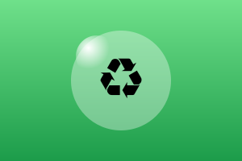
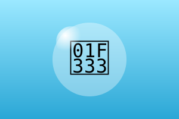
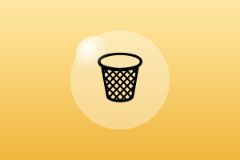

Manter a cidade limpa começa em você
Pequenos gestos, como jogar o lixo no lugar certo, protegem a saúde, evitam enchentes e deixam nossos espaços mais bonitos para todo mundo.
Quero ajudar!Por que isso importa?
🩺
Saúde
Lixo na rua atrai ratos, baratas e mosquitos que espalham doenças.
🌧️
Enchentes
Resíduos entopem bueiros e rios, e a água da chuva não escoa.
🌎
Meio ambiente
O lixo mal descartado polui o solo, a água e prejudica os animais.
🏙️
Bem-estar
Ruas limpas são mais agradáveis, seguras e valorizam o bairro.
Como manter a cidade limpa
- Descarte o lixo apenas em lixeiras ou nos dias e horários da coleta.
- Separe os resíduos recicláveis dos orgânicos.
- Nunca jogue lixo pela janela do carro ou em terrenos baldios.
- Recolha os dejetos do seu animal de estimação.
- Leve sua sacola reutilizável e evite descartáveis.
- Incentive vizinhos, amigos e familiares a fazerem o mesmo.
Quanto tempo o lixo leva para sumir?
Valores aproximados, que variam conforme o ambiente.
| Material | Tempo de decomposição | Destino correto |
|---|---|---|
| Papel | 3 a 6 meses | Lixeira azul (reciclável) |
| Chiclete | Cerca de 5 anos | Lixo comum |
| Sacola plástica | 100 a 400 anos | Lixeira vermelha (reciclável) |
| Lata de alumínio | 200 a 500 anos | Lixeira amarela (reciclável) |
| Vidro | Mais de 4.000 anos | Lixeira verde (reciclável) |
Galeria



Vídeo e áudio
Vídeo
Áudio
Ouça uma mensagem sobre cuidar da nossa cidade.